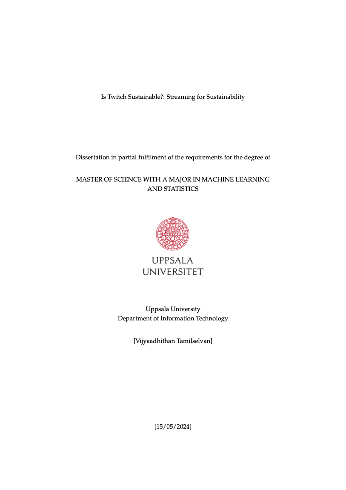

07 / Master’s thesis · 2024
Is Twitch sustainable?
Quantifying the carbon footprint of Twitch streaming through controlled experiments and real-world analysis.
The question
What does a live stream cost the environment?
My master’s thesis investigated the carbon footprint of Twitch streaming by connecting controlled streaming experiments with real-world platform data. It examined how stream duration, quality, viewership, and geographic context relate to estimated emissions.
Read the thesis PDF ↗
- 01Controlled experimentsStreaming configurations using AWS infrastructure, OBS Studio, and Larix Grove.
- 02Real-world observationsTwitch API data on stream duration, watch time, audiences, and channel characteristics.
- 03Estimation & analysisRelate transfer and energy assumptions to emissions estimates; examine associations with statistical analysis.
Research approach
Connect an experimental setup with observed behavior.
Experimental variation
The work considered resolution, frame rate, duration, and regional carbon-intensity assumptions, including AWS infrastructure in Frankfurt and San Francisco.
Statistical analysis
Descriptive statistics, correlation, OLS regression, multicollinearity checks, and hypothesis testing were used to explore the relationships in the collected data.
Interpretation
The thesis explores how streaming quality and duration affect estimated emissions, and why total emissions and emissions per viewer need to be considered separately.
Scope & limitations
The estimates depend on the experimental design, data coverage, and energy assumptions. The study is not a complete lifecycle assessment: end-user devices and equipment manufacturing are outside its main scope.
Research output
Is Twitch Sustainable?
Quantifying the Carbon Footprint of Twitch Streaming: A Controlled Experiment and Real-World Analysis.
Master’s thesis, Uppsala University, Department of Information Technology, 2024. Supervisor: Ossian Nordgren. Subject reviewer: Miriam Börjesson Rivera.
Read methods, results & limitations ↗